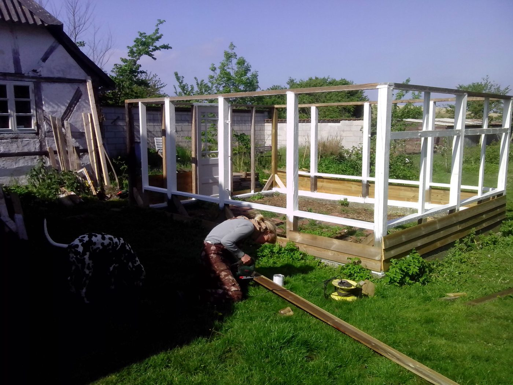

Vi dyrker et væld af forskellige frugter og grøntsager her på gården. Tingene gror mellem hinanden og i balancerede mængder, så der ikke opstår større områder med monokulturer, som er uhensigtsmæssigt for planterne og jorden.
Vi sprøjter ikke afgrøderne og gøder så vidt muligt med naturlig gødning. Afgrøderne sås og luges via håndkraft, og vi arbejder på en model, der er tæt på naturens egen, så arbejdsmængden ikke vokser os over hovedet.
Drivhuset, som vi har bygget af genbrugsmaterialer, giver ekstra varme til tomater og basilikum, og chiliplanterne får deres eget lille væksthus.
